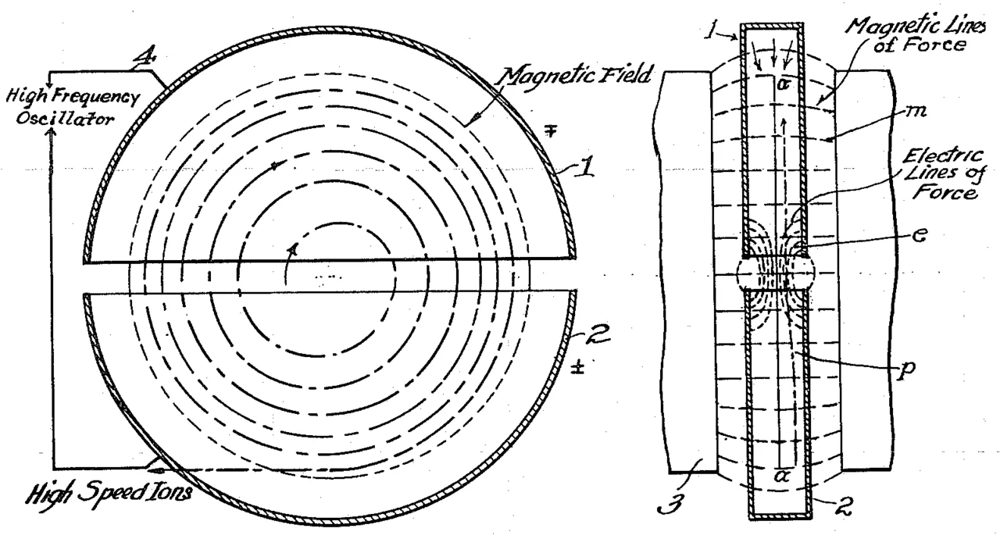
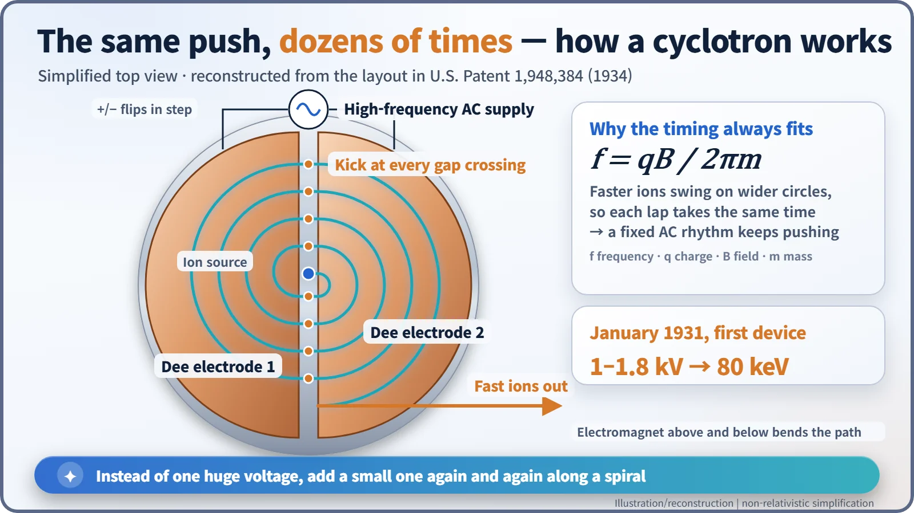
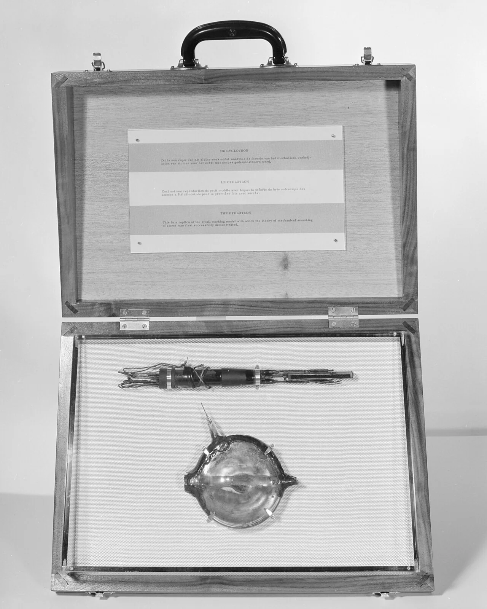
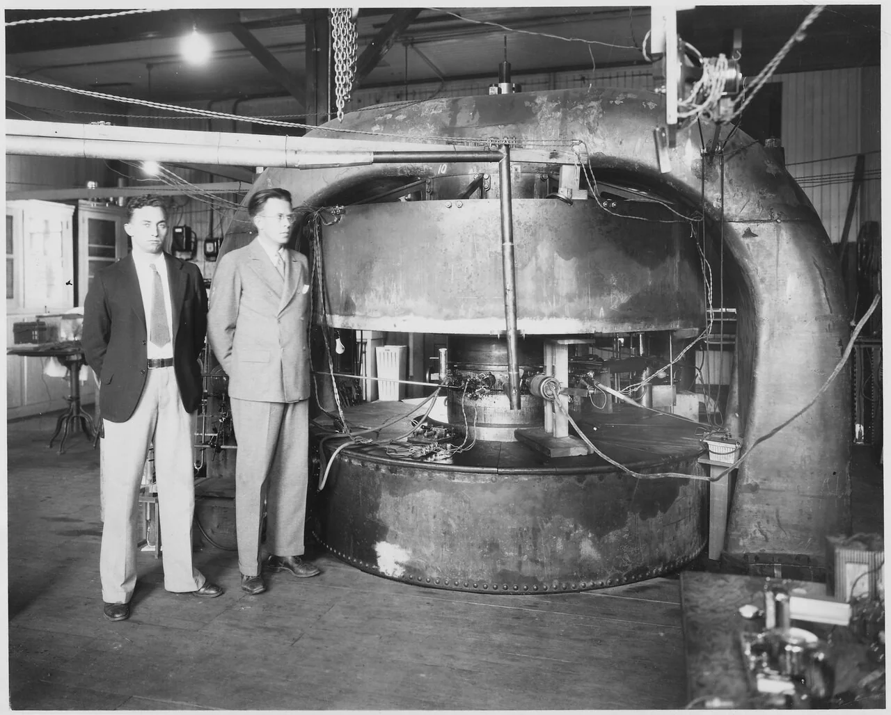
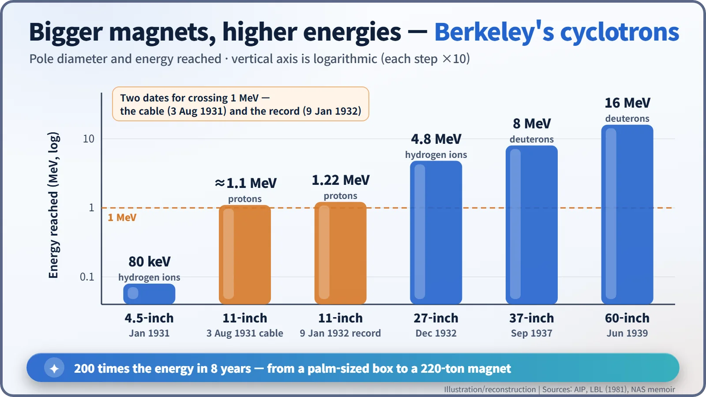

Nuclear History · 043
Round and Round to a Million Volts — Lawrence's Cyclotron (1931)
A brass box between magnet poles replaced the giant high-voltage column, and its spiral path opened the way to artificial isotopes and Big Science.
In January 1931, a palm-sized device built at Berkeley by Ernest Lawrence's graduate student M. Stanley Livingston pushed hydrogen ions to 80 keV using under 2,000 volts. Its secret was to bend the particles round in a magnet and give them the same small kick dozens of times. Within a year a larger version passed one million electron volts, and the cyclotron went on to reshape nuclear physics, medicine and the way science itself was organised.
A telegram worth celebrating
"Dr Livingston has asked me to advise you that he has obtained 1,100,000 volt protons. He also suggested that I add 'Whoopee'!" That telegram reached Ernest O. Lawrence (1901–1958), a young physicist at the University of California, Berkeley, on 3 August 1931. A million volts was the number everyone chasing the atomic nucleus dreamed about. Yet the machine that got there was not a towering high-voltage column. It was a flat brass box squeezed between the poles of a magnet. [1]
Why everyone wanted a million volts
Until then, the only "bullets" physicists could fire at a nucleus were alpha particles thrown out by radioactive substances such as radium. Nature chose their type and their energy. To fire the particle you wanted, at the energy you wanted, you needed an artificial accelerator, and the obvious route was a very high voltage. The trouble was that the higher the voltage, the bigger the apparatus, the more it sparked, and the sooner the insulation gave out.
A quick word on units. An electron volt (eV) is the energy a single charge picks up crossing one volt. A proton that falls through a million volts carries a million electron volts, or 1 MeV.
A diagram in a library
Lawrence arrived in Berkeley in the summer of 1928. One evening in 1929, leafing through journals in the library, he stopped at a diagram in a paper by the Norwegian engineer Rolf Widerøe (1902–1996). Widerøe lined up a row of tubes and gave a particle a small electrical kick each time it crossed a gap between them. The catch: to reach high energies, the row would have to get absurdly long. Lawrence wondered what would happen if, instead of a straight line, a magnet bent the particle round and round so it kept crossing the same gap. [1]

Pushing a swing at the right moment
Inside a vacuum chamber sit two hollow, D-shaped metal electrodes (the "dees") facing each other across a narrow gap, with a large electromagnet pressing from above and below. An ion released near the centre is bent into a half-circle by the magnetic field, and every time it crosses the gap an alternating voltage gives it a shove. As it speeds up, its circle grows wider, but each lap still takes the same time. So the ion stays in step with a voltage that flips at a fixed rhythm, just as a swing goes higher if you push at the same moment every time. The path becomes a widening spiral.

A palm-sized first machine: 80 keV
In 1930 Lawrence and his graduate student Niels Edlefsen described the idea briefly in Science. The working hardware was largely built by another graduate student, M. Stanley Livingston (1905–1986). In January 1931 the first device, about 4.5 inches (roughly 11 cm) across, pushed hydrogen ions to 80 keV (80,000 eV). The voltage across the gap was under 2,000 volts; adding it again and again, dozens of times, multiplied the energy many times over. Some sources give the diameter as 4 inches, and the oft-repeated claim that the parts cost about 25 dollars is a story often told rather than a documented fact. [1] [3]

Two dates for one milestone
Next came a machine with magnet poles 11 inches across. The August 1931 telegram about 1.1-million-volt protons refers to this device. However, the National Academy of Sciences memoir of Livingston gives 9 January 1932 as the day it accelerated protons to 1.22 MeV, the first time humans had produced particles above a million electron volts, and Berkeley laboratory histories likewise date the 1.22 MeV result to January 1932. So it is most accurate to say the million-volt milestone comes with two dates: August 1931 (the telegram) and January 1932 (the recorded result). Livingston later recalled that Lawrence "literally danced around the room with glee." [1] [2] [3]
Lawrence filed a patent on 26 January 1932 and received U.S. Patent 1,948,384 on 20 February 1934. The paper he wrote with Livingston that year has a title that sums up the whole trick: "The Production of High Speed Light Ions Without the Use of High Voltages." [6]
From a brass box to Big Science
What followed was a race to build bigger. A 27-inch machine reached 4.8 MeV in December 1932, a 37-inch machine 8 MeV in 1937, and a 60-inch machine 16 MeV in 1939. The 60-inch magnet weighed 220 tons. In eight years the energy had grown 200-fold. [2] [4]


Isotopes, medicine and a Nobel Prize
The cyclotron also became a factory for artificial radioactive isotopes. Doctors used isotopes such as sodium-24, with a half-life of about 15 hours, for treatment and tracer studies, and today small medical cyclotrons still make the isotopes used in hospital PET scans. Berkeley's habit of putting physicists, engineers and doctors on one team around one big machine, which came to be called "Big Science", grew up in this laboratory. Even the calutrons that separated uranium for the Manhattan Project were descendants of the cyclotron; their name came from "California University cyclotron." [2] [4]
Lawrence received the 1939 Nobel Prize in Physics "for the invention and development of the cyclotron and for results obtained with it, especially with regard to artificial radioactive elements." Because of the war, the Stockholm ceremony could not take place, and he was presented with the prize in Wheeler Hall, Berkeley, on 29 February 1940. Instead of fighting high voltage head-on, he had added a small push, perfectly timed, over and over, and changed how the nucleus was studied. [5]